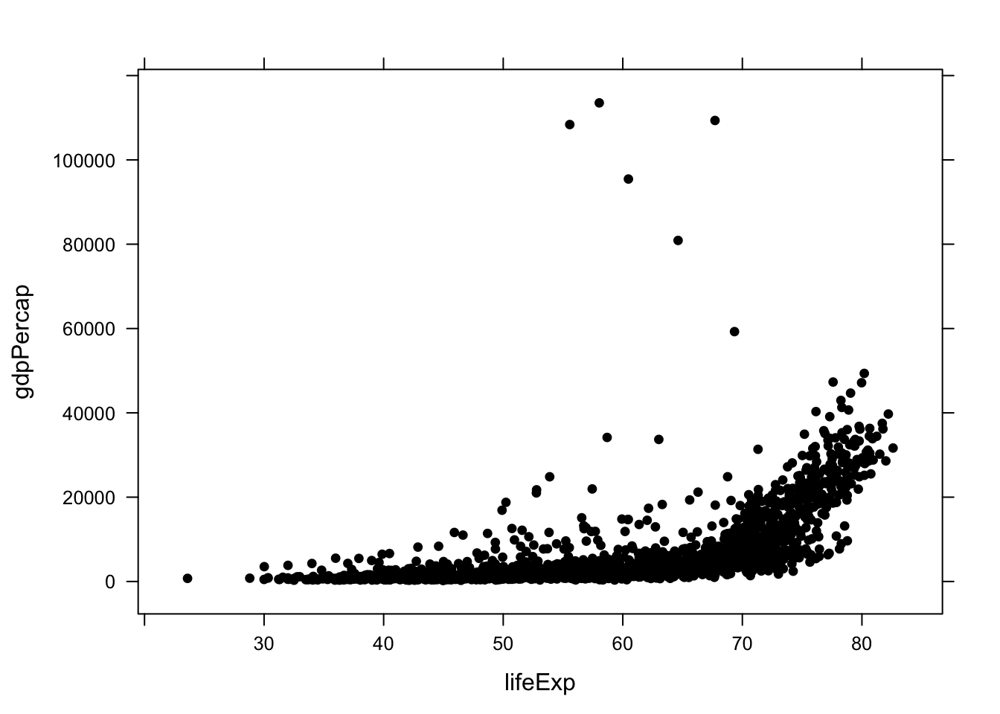
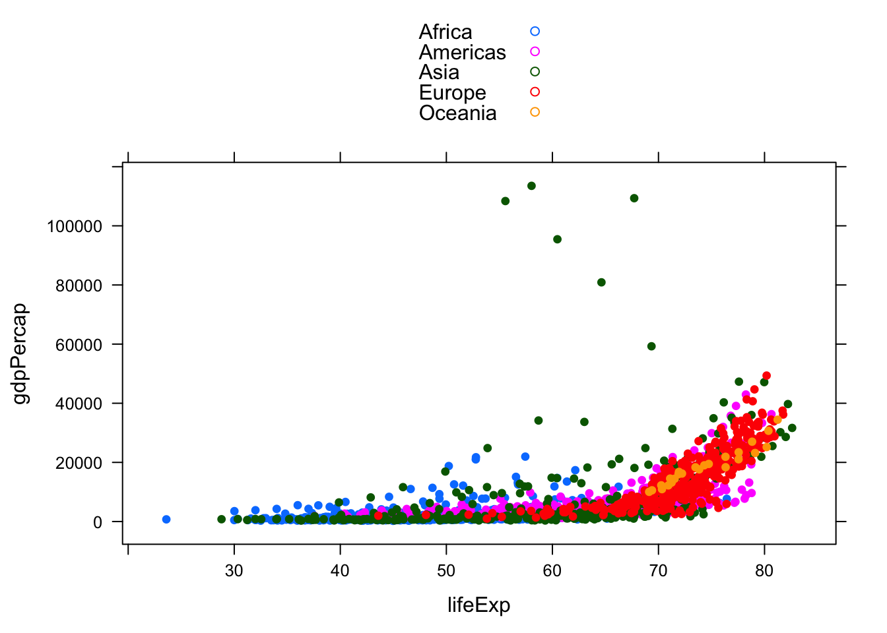
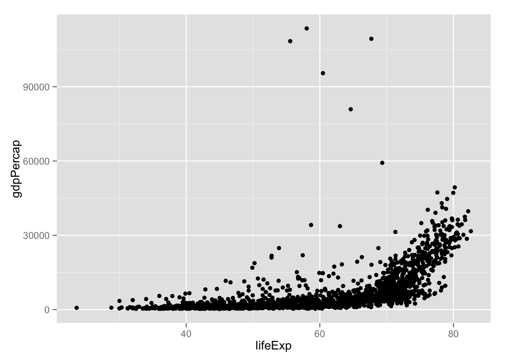
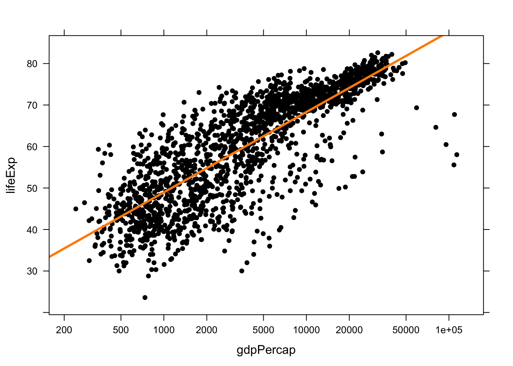
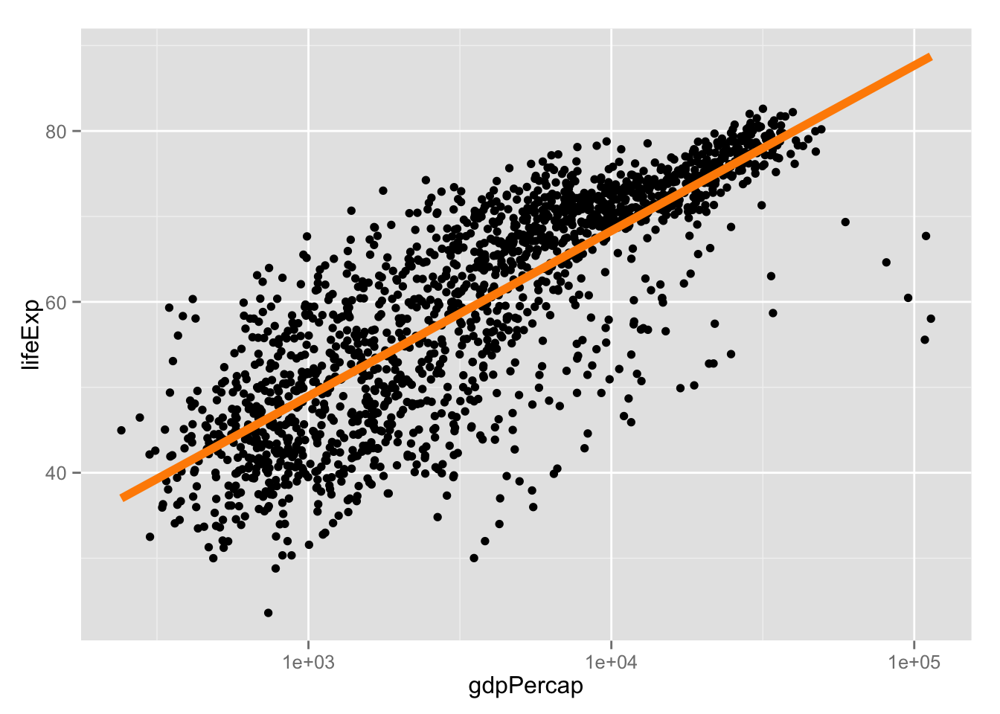
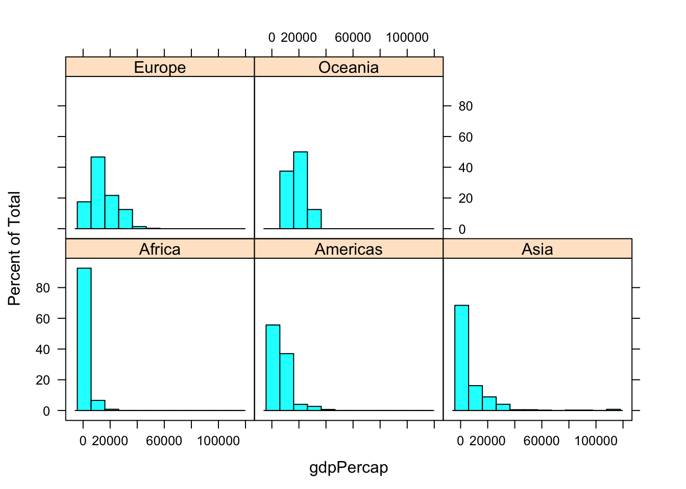
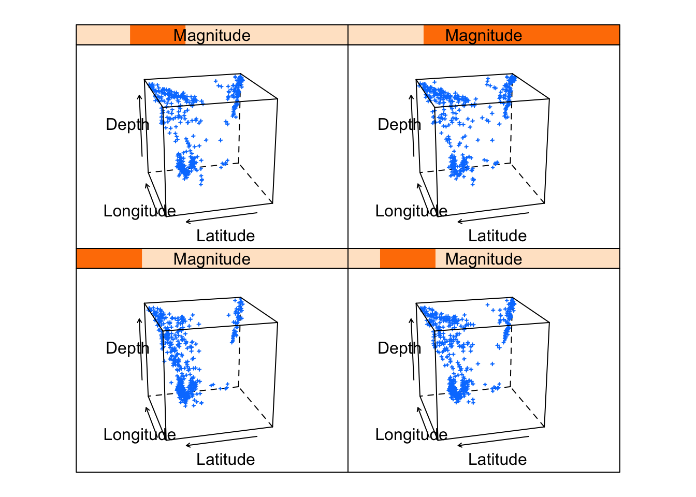

First let’s get all the packages that we need.
Data
We will use the gapminder data set in order to compare these two plotting packages.
library(gapminder)
First let’s remind ourself how the data looks like
str(gapminder)
## 'data.frame': 1704 obs. of 6 variables:
## $ country : Factor w/ 142 levels "Afghanistan",..: 1 1 1 1 1 1 1 1 1 1 ...
## $ continent: Factor w/ 5 levels "Africa","Americas",..: 3 3 3 3 3 3 3 3 3 3 ...
## $ year : num 1952 1957 1962 1967 1972 ...
## $ lifeExp : num 28.8 30.3 32 34 36.1 ...
## $ pop : num 8425333 9240934 10267083 11537966 13079460 ...
## $ gdpPercap: num 779 821 853 836 740 ...
Changing text and colors
After plotting our basic plots, we want to change characteristics of the plots like the colors and the labels.
Lattice
xyplot(gdpPercap~lifeExp, data = gapminder, pch = 16, col = 'black')

xyplot(gdpPercap~lifeExp, data = gapminder, pch = 16, col = 'black', main = 'Scatterplot in lattice', xlab = 'Life Expectancy', ylab = 'GDP per Capita')
xyplot(gdpPercap~lifeExp, data = gapminder, groups = continent, pch = 16, auto.key = TRUE)

ggplot2
ggplot(data = gapminder, aes(x = lifeExp, y = gdpPercap)) + geom_point()

ggplot(data = gapminder, aes(x = lifeExp, y = gdpPercap)) + geom_point() + xlab("GDP per Capita") + ylab("Life expectancy") + ggtitle("Scatterplot in ggplot")
ggplot(data = gapminder, aes(x = lifeExp, y = gdpPercap, color = continent)) + geom_point()

Layers
The data in the layers is the same, and they create the objects we perceive in the plot. A plot may have many layers, eg. a linear regression can be overlaid on a scatterplot.
Lattice
xyplot(lifeExp ~ gdpPercap, gapminder, scales = list(x = list(log = 10, equispaced.log = FALSE)), type = c("p", "r"), col.line = "darkorange", lwd = 3, pch = 16, col = 'black')

ggplot2
ggplot(data = gapminder, aes(x=gdpPercap, y=lifeExp)) + geom_point() + scale_x_log10() + geom_smooth(method = lm, se = FALSE, col = 'darkorange', lwd = 2)

Histograms - Multipanels
Multipanels or facets contain each their own dataset.
Lattice
histogram(~gdpPercap | factor(continent), data = gapminder)

ggplot2
ggplot(data = gapminder, aes(gdpPercap)) + geom_histogram(binwidth = 5000) + facet_wrap(~continent)

Main differences
3d surfaces
ggplot2 does not support 3d surfaces, therefore use lattice.
For 3d surfaces you can use cloud or wireframe. The general formula is:
cloud(z~x*y)
quakes$Magnitude <- equal.count(quakes$mag, 4)
cloud(depth ~ lat * long | Magnitude, data = quakes, zlim = rev(range(quakes$depth)), screen = list(z = 105, x = -70), panel.aspect = 0.75, xlab = "Longitude", ylab = "Latitude", zlab = "Depth")

Speed
- Lattice faster than ggplot, specially when dealing with >10,000 observations per facet.
The way you write the code
- In lattice everything is written in one function, whereas in ggplot each modificaiton is done in layers and therefore it can be easier to debug.